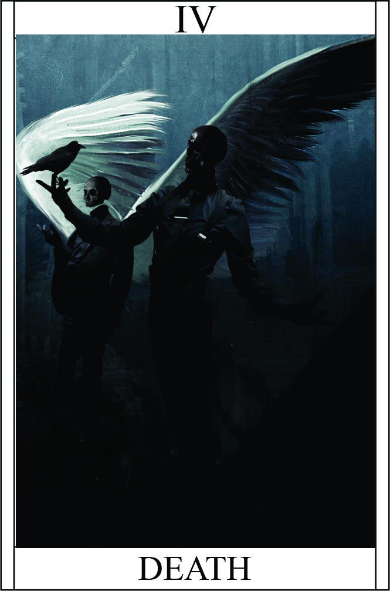

Death
Têndencia: Neutro Mal
Passiva:
Ressurreição Implacável:
você possui uma capacidade extraordinária de retornar à vida mesmo após ser morto. No entanto, há uma condição para isso: se você for finalizado dentro de um período de 5 minutos após a sua morte, você ressuscitará.
Legado 1 - Toque do Ceifador :
Você é capaz de infligir intensas dores em uma pessoa, causando 2 pontos de dano por rodada. Além disso, a pessoa afetada precisa fazer um teste de resistência para evitar perder sua ação naquele turno devido à dor intensa..
Condição:
2 DANO POR ROUND
Condição para ativar a habilidade:
É necessário Tocar na pessoa.
Legado 2 - Manto Sombrio - Proteção dos Mortos:
Ao ativar o Manto Sombrio, o campeão é envolvido por um véu de sombras e proteção proveniente dos mortos. Essa habilidade canaliza a energia do além, fortalecendo a defesa do campeão e proporcionando uma proteção adicional contra ataques físicos e mágicos.
Resistência Aumentada:
Ao ativar o Manto Sombrio, o campeão recebe um aumento significativo em sua resistência, reduzindo o dano recebido de ataques inimigos. Isso inclui tanto ataques físicos quanto mágicos, proporcionando uma defesa sólida contra uma variedade de ameaças.
Proteção dos Mortos:
O manto sombrio evoca a presença dos 4 espíritos dos mortos, que agem como guardiões e absorvem parte do dano direcionado ao campeão. Isso deixando imune a dois primeiros ataques e proporciona uma camada adicional de proteção.
Aura de Medo:
O Manto Sombrio emana uma aura de medo e desespero, afetando os inimigos próximos. Isso pode enfraquecer sua coragem e habilidades de combate, tornando-os mais suscetíveis a erros e menos eficazes em suas investidas.
Duração Limitada:
O Manto Sombrio tem uma duração limitada e se dissipa após um período de tempo determinado, exigindo um intervalo de recarga antes de poder ser ativado novamente.
O Manto Sombrio é uma habilidade que canaliza o poder dos mortos para proteger o campeão, concedendo-lhe uma defesa sólida e a capacidade de enfrentar adversidades com mais segurança. No entanto, seu uso requer cuidado e estratégia, pois sua duração limitada exige um timing preciso para maximizar seus benefícios.
1° Espirito: Anula efeitos e Dano | 2° Espirito: Anula Efeitos e Dano | 3° Espirito: Defende 10 HP | 4° Espirito: Terror, corta a vez do alvo +1 no teste. | Duração: 5 Round
Condição para ativar a habilidade:
É necessário estar em um estado de perigo iminente ou em uma situação onde a proteção adicional seja necessária para sobreviver.
Restrição de uso:
A habilidade pode ser ativada uma vez por combate, representando a invocação temporária de um manto sombrio que protege o campeão.
O Manto Sombrio é uma habilidade que canaliza o poder dos mortos para proteger o campeão, concedendo-lhe uma defesa sólida e a capacidade de enfrentar adversidades com mais segurança. No entanto, seu uso requer cuidado e estratégia, pois sua duração limitada exige um timing preciso para maximizar seus benefícios..
Legado 3 - Ceifador das Almas - Julgamento Final:
Ao realizar o Julgamento Final, o campeão invoca todo o seu poder como Ceifador das Almas, canalizando energias sombrias para desencadear um ataque devastador que leva a alma de seu oponente ao além.
Golpe Mortal:
Ao ativar o Julgamento Final, o campeão desfere um golpe fatal contra seu oponente, ignorando suas defesas e resistências. Esse golpe é capaz de causar um dano massivo, levando o alvo à beira da morte.
Colheita de Almas:
Após desferir o golpe, o campeão tem a capacidade de absorver a alma do oponente derrotado. Essa colheita de almas fortalece o campeão, restaurando parte de sua vida e energizando-o com a essência da morte.
Aura de Desespero:
O Julgamento Final emana uma aura sombria de desespero e terror ao redor do campeão, enfraquecendo a moral e as habilidades dos inimigos próximos. Isso pode afetar negativamente seus ataques e defesas, tornando-os mais vulneráveis e suscetíveis a erros.
Custo do Julgamento:
O Julgamento Final requer um alto custo de energia e vitalidade para ser realizado. Após utilizar essa habilidade, o campeão fica esgotado e precisa de um período de recuperação antes de poder usá-la novamente.
Finalizar o inimigo | Stack 1HP (somente campeões ou Éterianos) || Bônus de acerto +2
Condição para ativar a habilidade:
É necessário que o campeão esteja enfrentando um inimigo particularmente poderoso.
Restrição de uso:
A habilidade pode ser ativada uma vez por durante 2 sessões e ficar desarmado sem o Éter até recuperar a suas forças, sendo considerada o ápice do poder do campeão como A Morte
.
O Julgamento Final representa a máxima expressão do poder do Ceifador das Almas, permitindo que o campeão desencadeie uma devastação imensa sobre seus oponentes mais poderosos. No entanto, o alto custo e a natureza sombria da habilidade exigem sabedoria e discernimento em seu uso, já que o desequilíbrio entre vida e morte pode trazer consequências imprevisíveis.
Legado 4 - Vínculo Sombrio - Pacto de Almas:
Ao realizar o Pacto de Almas, o campeão estabelece um vínculo sombrio com entidades do submundo, concedendo-lhe um poder adicional para enfrentar situações extremas.
Infusão Sombria: :
Ao ativar o Pacto de Almas, o campeão é envolvido por uma aura sombria que aumenta sua força, resistência e habilidades físicas e mágicas. Isso permite que o campeão supere seus limites e lute com maior ferocidade.
Drenagem Vital:
Durante a ativação do Pacto de Almas, o campeão pode drenar a energia vital de seus oponentes com cada golpe desferido, recuperando uma 2HP do dano causado como vida adicional com acúmulo de 10HP. Essa drenagem vital fortalece o campeão e o mantém resiliente mesmo diante de ferimentos graves.
Proteção Ancestral:
Ao estabelecer o Pacto de Almas, o campeão recebe a proteção e a sabedoria das entidades sombrias com as quais se conecta. Isso confere resistência a ataques mágicos, reduzindo o dano recebido de feitiços e habilidades sobrenaturais.
Preço do Pacto:
O Pacto de Almas exige um preço alto do campeão. Após a sua ativação, o vínculo sombrio deixa vulnerável recebendo bônus de +1 dano a vitalidade do campeão. Após um período de tempo determinado, o Pacto se encerra, deixando o campeão enfraquecido e vulnerável, exigindo um tempo de recuperação antes que possa ser utilizado novamente.
+2 Força | +1 Protidão | Cada Ataque receber +2 de vida podendo acúmular até 10 | Reduzindo o dano -1 |
Condição para ativar a habilidade:
É necessário que o campeão esteja enfrentando um inimigo.
Restrição de uso:
A habilidade pode ser ativada uma vez por batalha, representando um último recurso do campeão para sobreviver e superar um desafio.
O Vínculo Sombrio - Pacto de Almas é uma habilidade desesperada e arriscada, que permite ao campeão extrair um poder adicional das entidades sombrias. No entanto, o preço a pagar é alto, com a vitalidade do campeão sendo drenada e a necessidade de um cuidadoso equilíbrio entre o uso do poder e o tempo de recuperação. Essa habilidade representa a conexão profunda e perigosa do campeão com as forças sombrias, proporcionando-lhe um último recurso para enfrentar ameaças extremas.